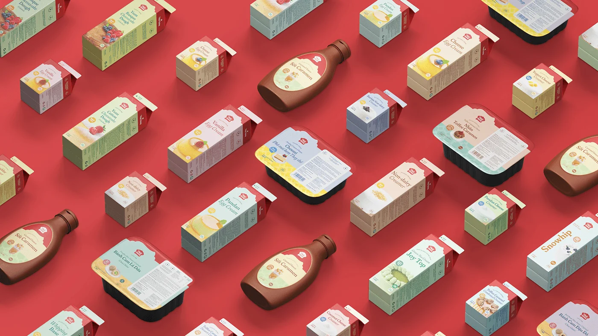
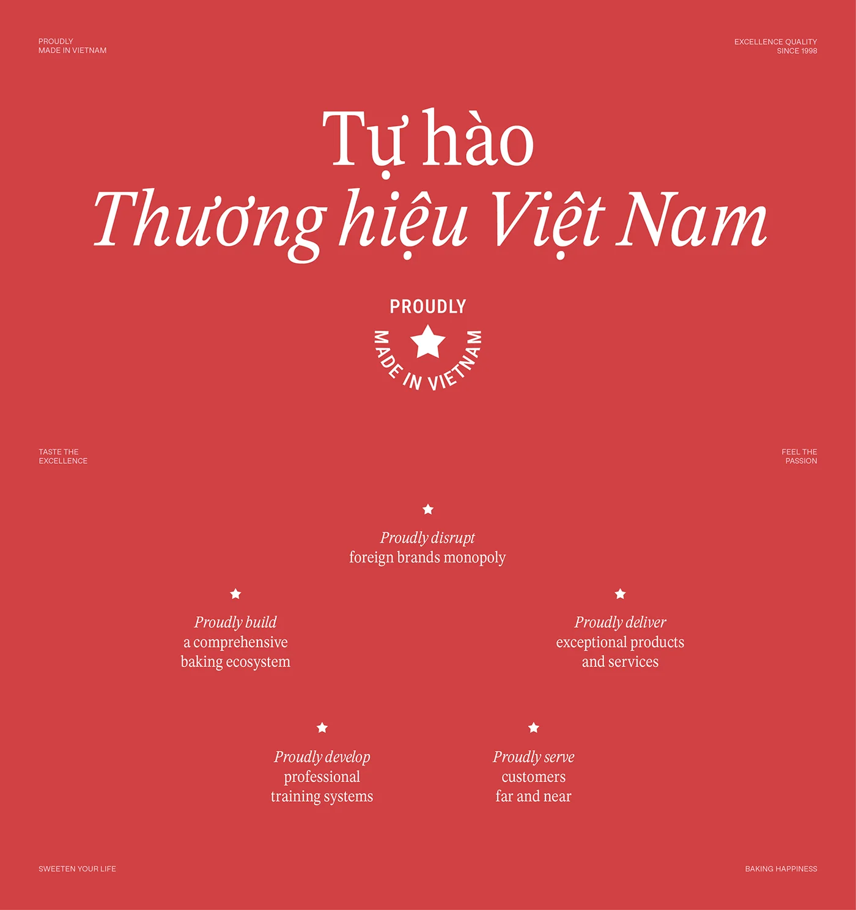
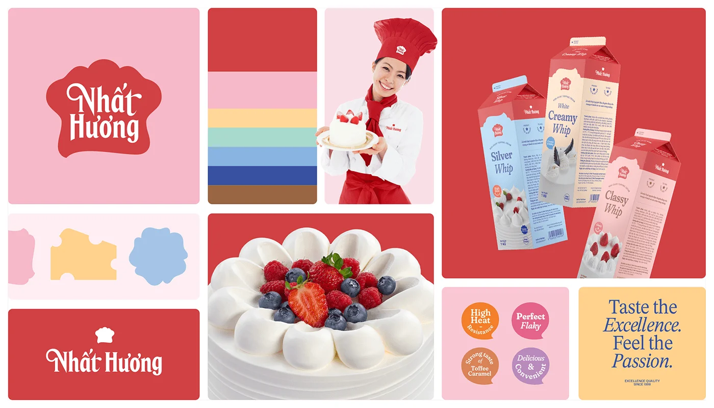
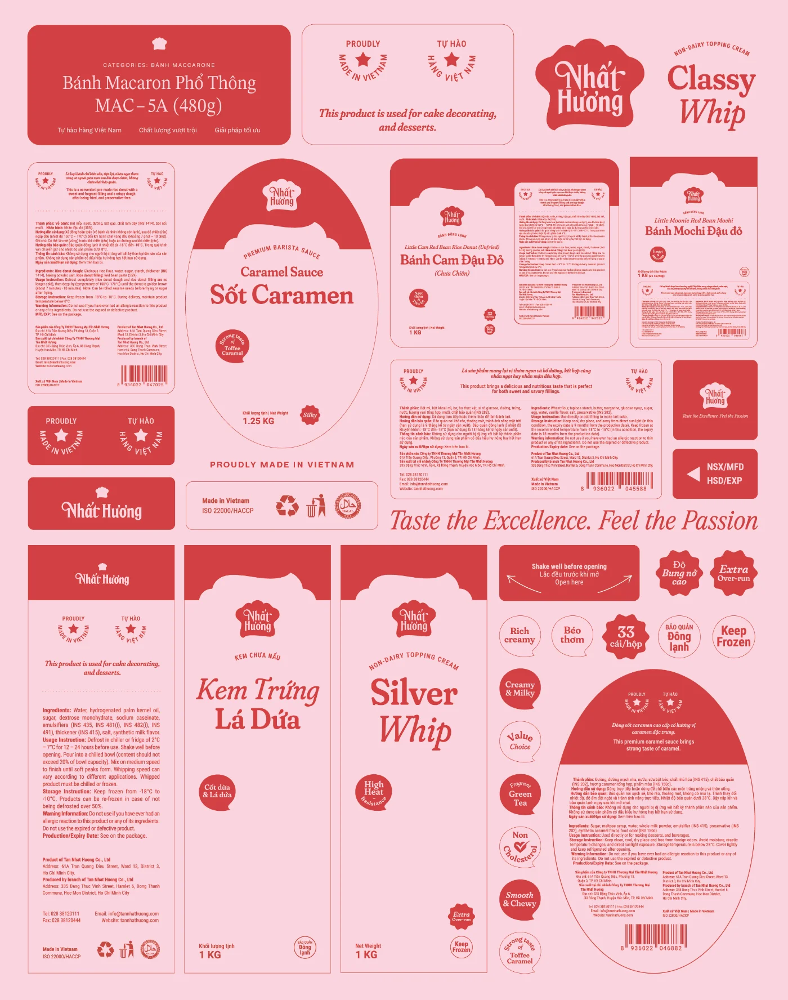
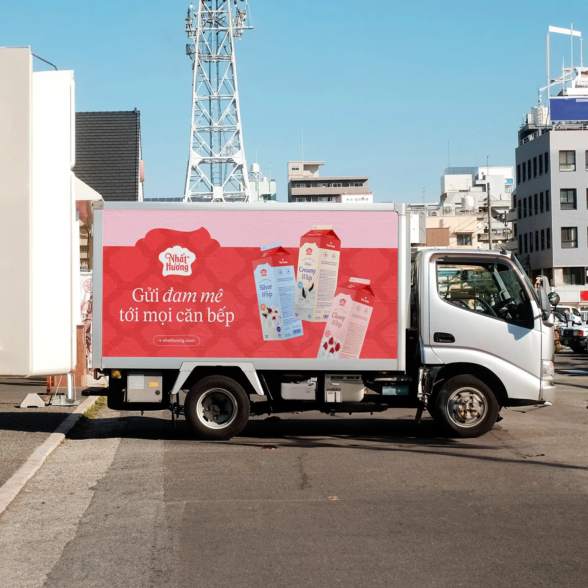
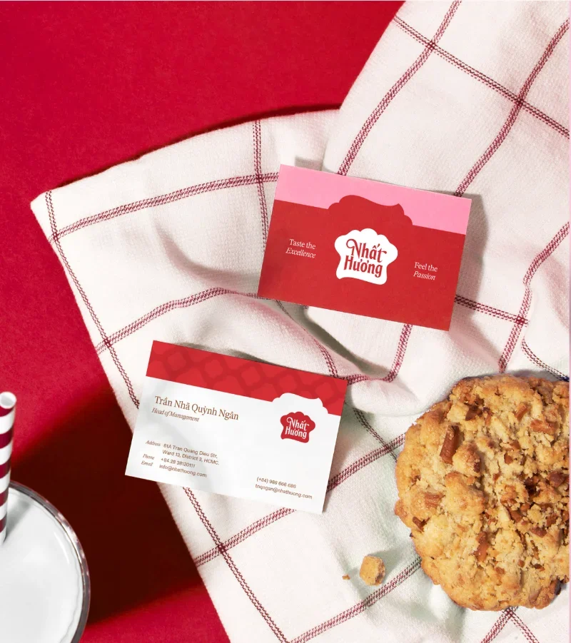
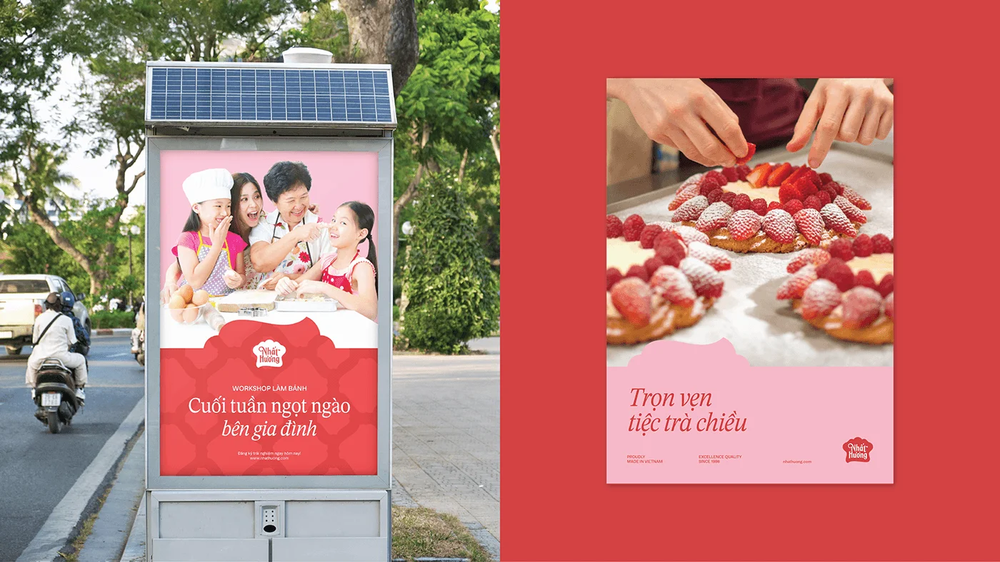
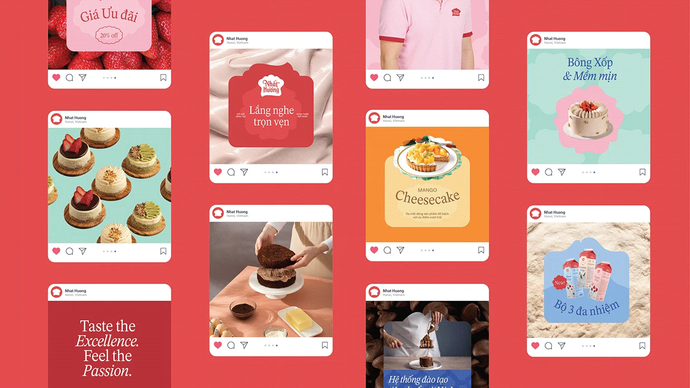

Nhat Huong has supplied Vietnamese bakers since 1998. I joined the brand team to refresh its identity and packaging without discarding the chef's-hat mark or the red customers already knew.
CLIENTNhat Huong · est. 1998
ROLEDesigner · brand team
TIMELINE6 months · 2023
TOOLSPhotoshop · Illustrator
DeliveredA refreshed logo, eight color families, five product-group patterns, and packaging for cartons, tubs, sauces, and labels.
My partIdentity and packaging design within the brand team. This page shows the visual-system work; it does not establish sole ownership of the broader rebrand or a production rollout.
Project status: the brand system was delivered to the client. The rollout is unconfirmed.

THE SYSTEM AT A GLANCEIDENTITY + PACKAGING
1998
THE LEGACY BEING REFRESHED
8
COLOR FAMILIES, WITH TINT RAMPS
5
PRODUCT-GROUP SHAPES → PATTERNS
THE CLIENT GAVE US TWO HARD RULES
Keep the chef's-hat mark. Keep the red. The job was to make the rest of the system easier to recognize and use across a wide product range.
THE BRAND ALREADY HAD A REAL STORY
Nhat Huong trains and supplies bakers, so the strategy centered on helping other people make things. The manifesto opens with Tự hào Thương hiệu Việt Nam, proudly a Vietnamese brand. That claim came from the company's history, not a campaign brainstorm.
I reconstructed the strategic options this way:
Archetype
The story it tells
Why it doesn't fit
Heritage Keeper: "since 1998, unchanged"
Tradition, nostalgia
Points backward; useless for the education arm and international ambitions
Modern Challenger: full reinvention
New brand, new market
Throws away the hat and the red, the two assets the client refused to spend
Inspirer (chosen)
Pride pointed forward
Puts the legacy to work across production, education, and community

ManifestoA Vietnamese-brand identity expressed through the system; the board is a design artifact, not market research.
REDRAWN, NOT REPLACED
The identity board below shows the retained hat silhouette, connected lettering, and lockups. An original-to-refreshed comparison is not available here, so this case focuses on the delivered system rather than claiming a measured improvement in recognition or legibility.

Identity boardLockups, seals, and the palette the mark anchors.
COLOR & TYPE
Red stays at the center, with pink added as its brighter partner. Six supporting families give each product line its own shelf cue without making it look like a separate brand:
Sweet Red & Candy Pink: the primary pair; heritage red, warmed up
Cream Yellow, Frost Mint, Milky Blue: the dairy-soft supporting range
Chocolate Brown, Blueberry Navy, Taro Purple: depth for premium lines
Type: a sturdy serif for heritage headlines, a clean sans for arm's-length reading.
Color systemHex and CMYK per family; built for print first.
GRAPHIC SYSTEM
I drew five piped shapes for cream, cake base, sauce, cheese, and frozen products, then turned each into a repeat pattern. Color and pattern work together so the product group is visible before someone reads the label.
Shapes → patternsOne silhouette per group, one pattern per shelf.
PACKAGING
Product lines are organized by color, pattern, and graphic element; the structure keeps a diverse range reading as one brand:
Line-upEach line keeps its accent and pattern; the hat seal and grid hold them together.

Label systemBilingual labels, seals, and barcodes for the full range: most of the actual work.Creamer trioSame grid, three accents.Shelf renderA visualization, not a live store photo.
APPLICATIONS
Rollout concepts beyond the shelf:
ToteThe bag runs three bands: red, mark, pattern.

Fleet livery conceptA mockup, not a deployed vehicle.

CollateralCards in the system's red and pink.

Out-of-homePhotography-led; the pattern frames rather than dominates.

SocialPhotography alternates with system tiles; the grid reads as one brand.
THE SYSTEM, COUNTED
The finished boards include:
Identity: refreshed mark + wordmark, 2 seal variants (Proudly Made in Vietnam · quality/est. seal), 3 lockup treatments (pink, red, black)